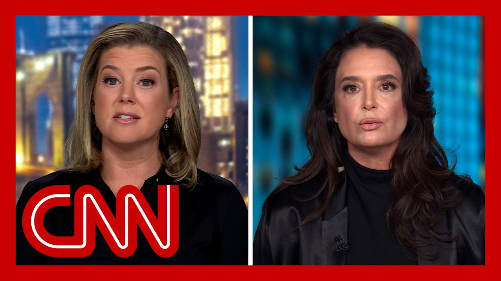

【CNN News 20250721 爱泼斯坦前女友描述与特朗普的涉嫌猥亵事件】
Summary: Jeffrey Epstein's ex-girlfriend alleges Trump groped her in 1993 while Epstein watched and smiled, calling it a "weird twisted game." Trump denies the claims.
摘要： 杰弗里·爱泼斯坦的前女友指控特朗普在1993年对她实施猥亵，而爱泼斯坦在一旁观看并微笑，称这是一场“怪异扭曲的游戏”。特朗普否认了这些指控。

⏱️ Estimated Reading Time: 14 min.
📚 四级生词 📚 六级生词 📚 雅思生词 📚 托福生词 📚 专八生词 📚 SAT生词 📚 考研生词 📚 GRE生词 📚 高考生词 📚 其它生词
Jeffrey Epstein's ex-girlfriend speaking out tonight, Stacey Williams, a former sports illustrated model who dated Epstein in the early 90s, has spent time with both Epstein and Donald Trump together.
杰弗里·爱泼斯坦的前女友今晚发声，斯泰西·威廉姆斯是90年代初与爱泼斯坦约会的前《体育画报》模特，曾与爱泼斯坦和唐纳德·特朗普共处。
In one disturbing alleged incident, which Williams went public with last year before the presidential election, Williams says Trump groped her in front of Epstein at Trump Tower in 1993.
在一段令人不安的涉嫌事件中，威廉姆斯去年在总统大选前公开指控，称1993年在特朗普大厦，特朗普在爱泼斯坦面前对她实施了猥亵。
Here's what she told our son, Lenservati, when she first broke her silence.
这是她首次打破沉默时告诉我们的记者伦瑟瓦蒂的内容。
The second he was in front of me, he pulled me into him, and his hands were just on me and didn't come off.
他一站到我面前，就把我拉过去，他的手一直放在我身上，没有松开。
Then the hands started moving, and they were on the side of my breasts, on my hips, back down to my butt, back up sort of then, you know, they were just on me the whole time.
然后他的手开始移动，先是放在我的胸部侧面，接着是臀部，然后又回到臀部上方，你知道，他的手一直没离开过我。
And I, sorry. I froze.
而我，抱歉，我僵住了。
Williams also claimed that Epstein and Trump looked at each other and smiled during the alleged incident, which Williams says she now believes was coordinated and quote some kind of weird twisted game.
威廉姆斯还声称，爱泼斯坦和特朗普在涉嫌事件中互相看着对方并微笑，她现在认为这是有预谋的，并称之为“某种怪异扭曲的游戏”。
Trump denied Williams' allegations through his campaign at the time, which said in part, quote, it's obvious this fake story was contrived by Kamala Harris' campaign.
特朗普当时通过竞选团队否认了威廉姆斯的指控，称“这明显是卡玛拉·哈里斯的竞选团队编造的假新闻”。
And Stacey Williams is out front now to speak out for the first time since the uproar over Trump's handling of the Epstein case.
斯泰西·威廉姆斯现在首次公开谈论此事，此前因特朗普处理爱泼斯坦案引发的争议。
Stacey, thank you so much for joining us tonight.
斯泰西，非常感谢你今晚加入我们。
As you know, Epstein is dominating the news once again in his relationship with Trump is under scrutiny.
如你所知，爱泼斯坦再次成为新闻焦点，他与特朗普的关系正受到审查。
While you were dating Epstein, can you tell us how close these two men were?
在你与爱泼斯坦约会期间，你能告诉我们这两人关系有多密切吗？
They were best friends.
他们是最好的朋友。
You know, I dated Jeffrey for a period of more or less, I think about four or five months.
你知道，我和杰弗里约会了大约四五个月。
And the only friend that he would mention every time we saw each other or had a phone conversation was Donald and he would share a lot of anecdotes, I have plenty of anecdotes.
每次我们见面或通电话时，他唯一提到的朋友就是唐纳德，他会分享很多轶事，我也有很多轶事。
And yeah, they were very close and they were up to no good.
是的，他们非常亲密，而且没干好事。
And how did Epstein talk about Trump?
爱泼斯坦是怎么谈论特朗普的？
Sort of what was the quality of those anecdotes and how he described him?
那些轶事的性质是什么？他是怎么描述特朗普的？
Well, there was a time when he mentioned the idea to check in on him because he was unwell and very upset about something that had happened.
有一次，他提到要去看望特朗普，因为特朗普身体不适，并对某件事感到非常沮丧。
I remember because he was late to pick me up and he was explaining why he was late.
我记得因为他接我迟到了，还解释了原因。
They were just, you know, it was such a long time ago, but it was just part, that was his, that was his bro, that was his wing man.
你知道，那是很久以前的事了，但那就是他的兄弟，他的搭档。
It was clearly, I'd hear about Gilan and I'd hear about Jeffrey.
很明显，我听说过吉兰，也听说过杰弗里。
And I met Gilan in his house.
我在他家里见过吉兰。
She would come wafting in and out, the home in New York.
她会在纽约的家里进进出出。
So he was clearly just someone that he talked about all the time.
所以他显然是他经常谈论的人。
And again, you know, I really, I met Jeffrey the second time when we started dating based on the introduction, the reintroduction that happened at the Plaza Hotel at a Christmas party in 1992 that Donald Trump threw.
再说一次，你知道，我第二次见到杰弗里是在1992年特朗普在广场酒店举办的圣诞派对上，那次重新介绍让我们开始约会。
No, they were very, very close.
不，他们非常非常亲密。
So let's talk about this incident, a alleged incident in 1993, where you say that Trump grove you in front of Epstein.
那么我们来谈谈1993年的这起涉嫌事件，你说特朗普在爱泼斯坦面前猥亵了你。
I do want to note that CNN has spoken to three friends of yours who confirmed that you told them about this alleged incident over past decades.
我想指出，CNN已经与你的三位朋友交谈过，他们证实你在过去几十年里向他们讲述过这起涉嫌事件。
Can you tell me more about what happened that day and particularly how Trump and Epstein interacted?
你能详细说说那天发生了什么吗？尤其是特朗普和爱泼斯坦是如何互动的？
Yeah, before I get into the details of what happened, which obviously I told you guys and I've shared with multiple outlets, the specifics of the assault that happened.
好的，在我详细讲述发生的事情之前，显然我已经告诉过你们，也向多家媒体分享过这起袭击的具体细节。
I want to point out that I was polygraphed before I did all this by one of the most renowned examiners in the world.
我想指出，我在做这一切之前接受了世界上最著名的测谎专家之一的测谎。
Michael Wolfe has hundreds of hours of interviews with Jeffrey Epstein, where Jeffrey confirmed to Michael what the two of them did to me long before I came out and told you all of this.
迈克尔·沃尔夫与杰弗里·爱泼斯坦进行了数百小时的访谈，爱泼斯坦早就向迈克尔承认了他们两人对我做的事，远早于我公开讲述这一切。
So those are two critical data points that you need to have and now I'll walk you through what happened.
所以这是你需要知道的两个关键数据点，现在我来告诉你发生了什么。
I was dating Jeffrey.
我当时在和杰弗里约会。
He was always talking about Donald.
他总是谈论唐纳德。
It was as bestie and everything and he was joking about how Donald thought I was hot and Donald thinks I'm this or whatever, once to talk to you and he was telling me this as we were taking a walk down Fifth Avenue one day and he said, let's stop in and see him at his offices.
他是他的好兄弟，他还开玩笑说唐纳德觉得我很火辣，唐纳德觉得我怎么怎么样，有一天我们在第五大道散步时他告诉我这些，然后他说，我们去他办公室看看他吧。
So we went up to his office in Trump Tower and within a couple of minutes, Jeffrey Donald was outside of his door and his hands were all over me.
于是我们去了特朗普大厦的办公室，几分钟后，杰弗里·唐纳德站在门外，他的手就开始在我身上乱摸。
They were on my breasts, they were on my butt, they were on my hips up and down while the two of them just kept having a normal conversation.
他的手放在我的胸部、臀部，上下移动，而他们两人还在正常交谈。
I don't remember exactly what was in the conversation again.
我不记得具体谈了什么。
This was, we're talking 90, this is 93 now.
那是90年代，现在是93年。
It was something about, it was irrelevant.
大概是些无关紧要的事。
It was like, oh, Stacey's career's on fire.
比如，哦，斯泰西的事业如日中天。
She just did sports all straight again, you know, blah, blah, blah, blah, blah, and they were back and forth smiling and grinning and carrying on a conversation while Donald ran his hands all over me and you know, when that happens in broad daylight in someone's office and an assistant's walking back and forth, you're in shock.
她刚又上了《体育画报》，你知道，就是些废话，他们笑着来回交谈，而唐纳德的手一直在我身上摸来摸去，你知道，当这种事在光天化日之下发生在别人的办公室，还有助理来回走动时，你会震惊。
If it happens in a dark alleyway, right? You defend yourself, but when it's hidden in its brazenness like that, which is Donald Trump's forte, you know, you go into shock.
如果发生在黑暗的小巷里，对吧？你会自卫，但当它如此明目张胆却又隐蔽，这是唐纳德·特朗普的专长，你知道，你会陷入震惊。
So I froze and it was over and very quickly.
所以我僵住了，事情很快就结束了。
It was a few minutes and then we got back in the elevator and Jeffrey's energy had changed.
几分钟后我们回到电梯，杰弗里的情绪变了。
He was like seething, he was enraged, he would make eye contact with me and then we got out on the street on Fifth Avenue and he looked at me and he just started yelling at me saying why did you let him do that?
他怒火中烧，非常愤怒，他会和我对视，然后我们走到第五大道的街上，他看着我就开始冲我大喊，说你为什么让他那么做？
And he was so enraged and then I remember thinking like, why did I?
他非常愤怒，然后我记得我在想，我为什么？
I felt like I was coming back into my body at that moment and I was confused.
那一刻我感觉自己回到了身体里，我很困惑。
So that's the story of the assault.
这就是那次袭击的故事。
And I do just want to note, Stacey, that Trump has denied these allegations, which you are well aware of.
斯泰西，我想指出，特朗普已经否认了这些指控，你也清楚这一点。
And I know at times you've referenced videos which we have not confirmed the existence of, but I know that you felt that this was coordinated later when you looked back on it.
我知道你有时提到一些视频，我们尚未确认其存在，但我知道你后来回顾时认为这是有预谋的。
What was it that made you draw that conclusion?
是什么让你得出这个结论？
Well, I had, I was sort of known in the industry for being somewhat combative with, you know, photographers who would expose themselves or do inappropriate things or even guys who would touch or harass on the streets and Jeffrey was aware of that.
嗯，我在业内以对摄影师或街头骚扰者采取对抗态度而闻名，杰弗里知道这一点。
And I think he was excited.
我认为他很兴奋。
I think the gist in my mind, given what he knew and the way it played out was, hey, you know, I'm gonna deliver this person to you who's actually not gonna let you get away with what you do.
根据他所知道的和事情的发展，我认为他的想法是，嘿，我要把这个人交给你，她实际上不会让你得逞。
And I did because I froze.
但我确实让他得逞了，因为我僵住了。
Like I said, when a tinnan is brazenness like that, you freeze and, you know, he's a master of that.
就像我说的，当一个人如此肆无忌惮时，你会僵住，你知道，他是这方面的高手。
So I mean, he talked about it, right? He talked about pussy grabbing on the Access Hollywood tape.
我是说，他谈论过这个，对吧？他在《走进好莱坞》录音带里谈论过抓女性下体。
And tonight, if you're aware, President Trump has filed this libel lawsuit against the Wall Street Journal over its reporting that there was this note, bearing Trump's name as a signature in an outline of a naked woman that was included in a 50th birthday album for Epstein in 2003, a note that also depicted an imaginary conversation between the two men and part of it reads, quote, Donald saying, we have certain things in common, Jeffrey.
今晚，如果你知道的话，特朗普总统已经对《华尔街日报》提起诽谤诉讼，因其报道称2003年爱泼斯坦的50岁生日相册中包含一张纸条，上面有特朗普的签名，旁边是一个裸体女性的轮廓，纸条还描绘了两人之间的虚构对话，部分内容是，唐纳德说：“我们有一些共同点，杰弗里。”
Jeffrey, yes, we do come to think of it.
杰弗里：“是的，我们确实有。”
Donald, Enigma's never age. Have you noticed that?
唐纳德：“谜一样的人永远不会老，你注意到了吗？”
Jeffrey is a matter of fact. It was clear to me that last, the last time I saw you and then finally, Donald, a pal is a wonderful thing.
杰弗里：“事实上，我上次见到你时就很清楚。”最后，唐纳德：“朋友是美好的。”
Happy birthday and may every day be another wonderful secret.
“生日快乐，愿每一天都是另一个美好的秘密。”
Trump called that letter fake.
特朗普称那封信是假的。
He said it was out of character for him because he never wrote a picture, drew a picture in his life, wrote a picture.
他说这不符合他的性格，因为他一生中从未画过画。
I think he said it's not his kind of language.
我想他说这不是他的语言风格。
Based on your time with both men, does that sound out of character to you?
根据你与这两人相处的时间，这听起来不符合他的性格吗？
What are you kidding me?
你在开玩笑吗？
I know what they were up to together.
我知道他们一起干了什么。
It happened to me.
这事发生在我身上。
That was polygraphed.
我通过了测谎。
I have the post-disult postcard with a love note.
我有带情书的明信片。
So I have the receipts.
所以我有证据。
Where are Donald Trump's receipts?
唐纳德·特朗普的证据在哪里？
Where are they?
在哪里？
I know what they're up together and I know what that means.
我知道他们一起干了什么，我知道那意味着什么。
It's very clear.
非常清楚。
It wasn't baking or fishing.
不是烘焙或钓鱼。
Stacy Williams, I really appreciate you taking the time to speak with us tonight.
斯泰西·威廉姆斯，非常感谢你今晚抽时间与我们交谈。
Thank you so much.
非常感谢。
Thank you.
谢谢。